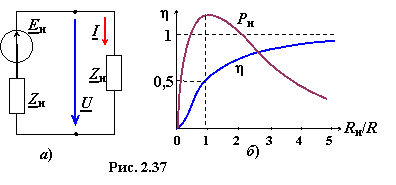

Рассмотрим электрическую цепь, состоящую из источника энергии (сигнала) Eи с внутренним сопротивлением Zи = Rи + jXи и нагрузки с сопротивлением Zн = Rн + jXн (рис. 2.37а). В общем случае ток

а активная мощность нагрузки
Чтобы получить максимальную мощность, передаваемую в нагрузку, необходимо:
• исключить в знаменателе реактивное сопротивление Х, т. е. получить режим резонанса напряжений (РН), при котором сопротивление X = Xи + Xн = 0 или Xи = −Xн. Выполнив это условие, получим значение активной мощности
• найти оптимальное соотношение между сопротивлениями Rи и Rн. Для этого возьмём производную dPн(max)/dRн и приравняем её к нулю, т. е.
Rн = Rи.

Итак, для согласования источника энергии (сигнала) с нагрузкой по критерию максимума мощности, передаваемой в нагрузку, сопротивление нагрузки должно быть величиной, комплексно-сопряжённой с внутренним сопротивлением источника. При выполнении этого условия, имеем:
• максимально достижимое значение активной мощности, передаваемой в нагрузку,
(2.64)
• мощность источника сигнала

• коэффициент полезного действия источника сигнала (рис. 2.37б)
(2.65)
Такой режим работы реализуют в маломощных радиоустройствах. Промышленные же системы
электроснабжения работают при отношениях Rн/Rи > 5 (при малых Rи), при которых КПД η −−> 1.